Phase Diagrams and Solidification
Phases and microconstituents, binary diagrams, the Gibbs phase rule and the lever rule, eutectic systems, precipitation, the invariant reactions, intermetallic compounds, the Fe-C system with the microstructures of steels, and ceramic and ternary diagrams.
Central idea: a phase diagram is a map that tells which phases are stable in a material for each temperature, pressure and composition. Reading it gives three answers for any alloy at any temperature: which phases are present, what each phase is made of, and how much of each there is.
This page follows the official slides of Topic 4 in order. Part I (Session 7) covers the basic vocabulary, one-component diagrams, binary isomorphous systems, the Gibbs phase rule, the tie line and the lever rule, non-equilibrium solidification and binary eutectic systems. Part II (Session 8) covers solid-state precipitation, the invariant reactions, intermetallic compounds and congruent and incongruent melting. Part III (Session 9) covers the Fe-C system, the equilibrium transformations of steels and the influence of alloying elements. Part IV (Session 10) covers ceramic and ternary phase diagrams. Worked examples use only data printed on the slides.
Part I — Phase diagrams I (Session 7)
§ 1 Component, phase and microconstituent [Session 7 Slide 2]
Three words are used all through the topic, and they mean different things:
- Component: a chemical substance or compound with a fixed composition that can form part of a phase or of an alloy. Examples: aluminium (Al), alumina (Al₂O₃).
- Phase: a chemically and structurally homogeneous region that forms part of the microstructure. It can be made of one or of several components. Examples: ferrite (a solid solution of C in Fe with BCC structure), austenite (a solid solution of C in Fe with FCC structure), calcium carbonate (CaCO₃).
- Microconstituent: each of the different structures that can be seen on a polished surface of the material. It can be made of one phase or of several phases.
The slide illustrates the three words with food: the components of a potato are water, protein, fat, carbohydrates and so on (a table of grams per 100 g); the potato itself plays the role of a phase; and fries, a structure you can see and that is made from the potato, play the role of a microconstituent.
In a real material, the micrograph below shows a steel with two microconstituents. Region 1 is ferrite, a single phase. Regions 2 and 3 are pearlite, a microconstituent made of two phases (ferrite and cementite) arranged in thin alternating plates.
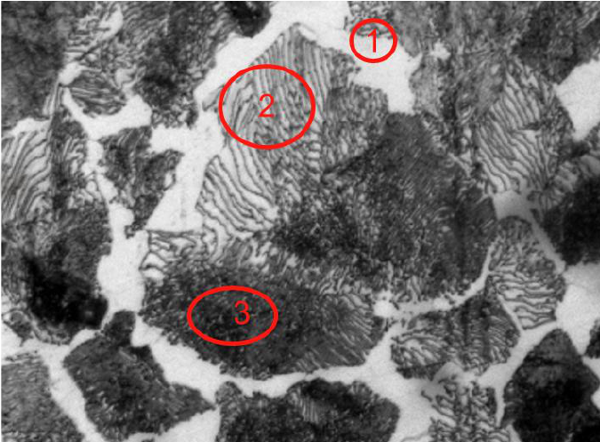
§ 2 The equilibrium phase diagram [Session 7 Slide 3]
An equilibrium phase diagram (also called a stability map) is a map of the phases in thermodynamic equilibrium that are present in a system of materials at different pressures, temperatures and compositions.
The slide uses the phase diagram of CO₂ as an example:
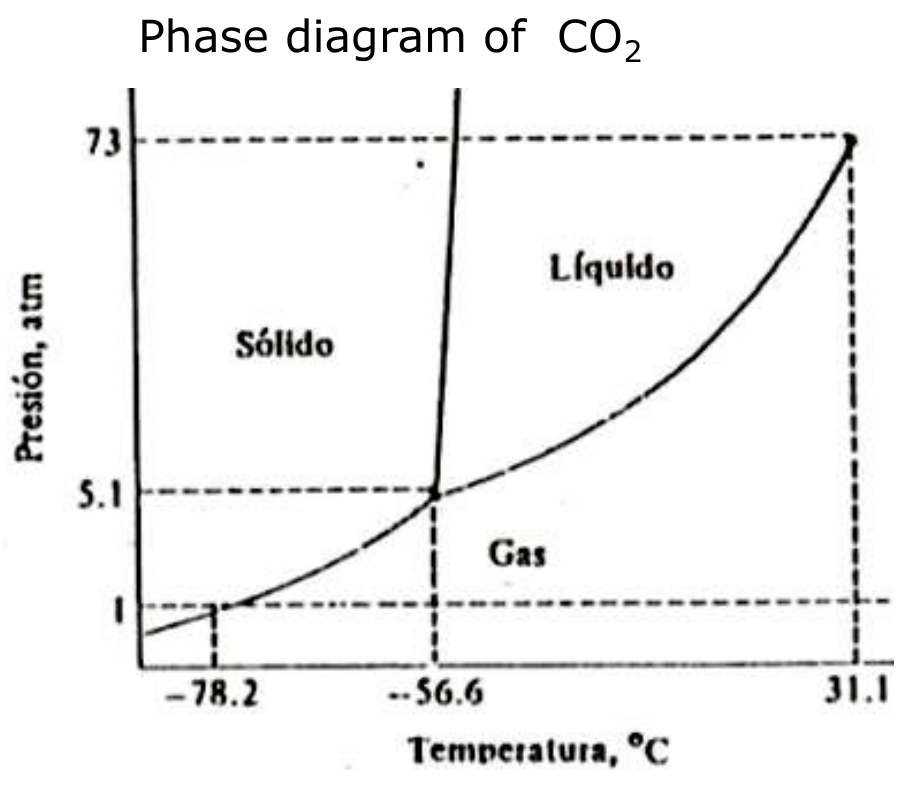
- There is no liquid CO₂ at room temperature and ambient pressure.
- The slope of the solid-liquid line, $dP/dT$, is positive, as it is in almost all substances.
- At the triple point (5.1 atm, −56.6 °C) gas, liquid and solid are in equilibrium.
- At temperatures below the triple point CO₂ can sublime: gas → solid (dry ice) on cooling, and solid → gas on heating.
- Above the critical temperature $T_c$ = 31.1 °C (the value printed on the diagram; the text of the slide writes 32 °C) and pressure $P_c$ = 73 atm CO₂ is a supercritical fluid (used to extract caffeine from coffee).
Question. A block of solid CO₂ is heated at a constant pressure of 1 atm. What phases appear?
Reading the diagram. Follow the horizontal line $P$ = 1 atm from left to right. Since 1 atm is below the pressure of the triple point (5.1 atm), the line never enters the liquid region: it goes from the solid region straight into the gas region, crossing the sublimation line at −78.2 °C.
Answer. The solid turns directly into gas at −78.2 °C (sublimation). Liquid CO₂ can exist only at pressures above 5.1 atm, which is why there is no liquid CO₂ at room conditions [Session 7 Slide 3].
§ 3 Unary (one-component) diagrams [Session 7 Slides 5-6]
With a single component the composition is fixed, so the diagram is drawn with pressure and temperature as axes (a P-T diagram).
3.1 Water [Session 7 Slide 5]
The P-T diagram of water has three lines that meet at the triple point $P_T$: the sublimation line (A to $P_T$), the melting line ($P_T$ to B) and the vaporisation line ($P_T$ to C). Cooling at constant pressure along the dashed line, the water vapour first crosses the vaporisation line at $T_v$ and then the melting line at $T_m$.
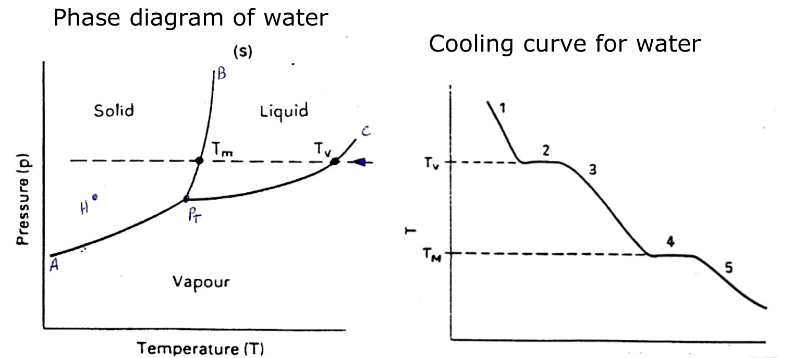
The cooling curve on the right records the temperature against time along that path. In the stretches 1, 3 and 5 a single phase cools down. In the plateaus 2 (condensation at $T_v$) and 4 (solidification at $T_m$) the temperature stays constant while two phases coexist, because the heat released by the transformation compensates the heat that is lost.
On a diagram with pressure on a log scale, the vertical line at 1 atm meets the melting line at 0 °C (water/ice) and the vaporisation line at 100 °C (steam/water):
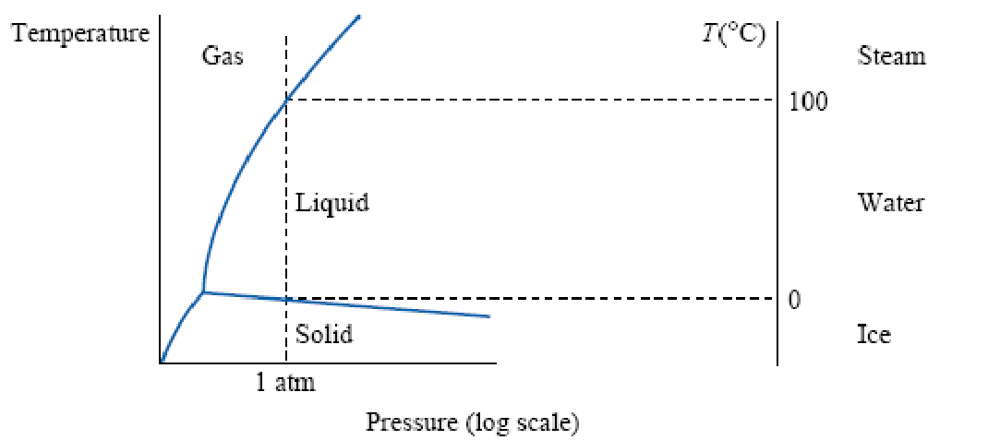
At very high pressures (up to several GPa) water has many different solid phases, the different crystal structures of ice:
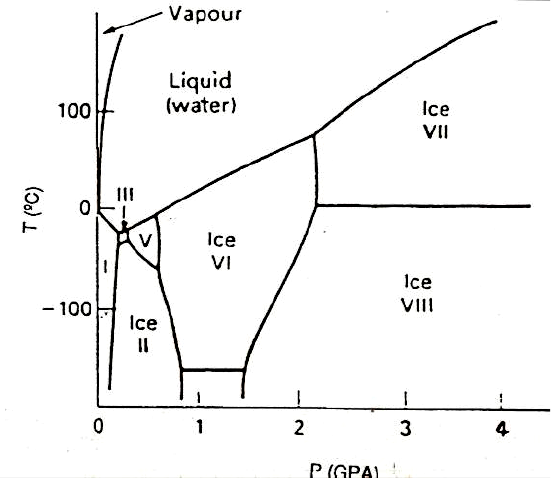
3.2 Pure iron [Session 7 Slide 6]
Solid iron has three different crystal structures, each a different phase: α-Fe (BCC) below 910 °C, γ-Fe (FCC) between 910 and 1394 °C, and δ-Fe (BCC) from 1394 °C up to the melting point, 1538 °C. Different phases coexist at the triple points. The slide compares the three solid structures with three varieties of potato (yellow, red and purple) and the liquid with potato purée: the same "substance" in different forms.
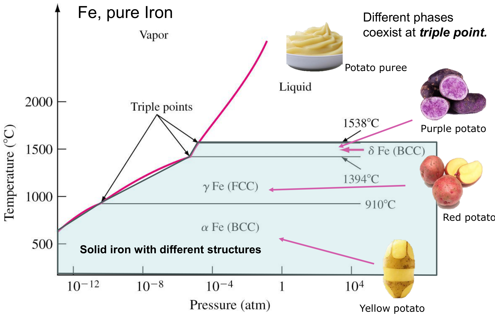
§ 4 Binary isomorphous diagrams [Session 7 Slides 8-11]
4.1 Cooling curves [Session 7 Slide 8]
Cooling curves are used to determine the temperatures of the phase transitions: the temperature of a cooling molten metal is recorded against time and plotted.
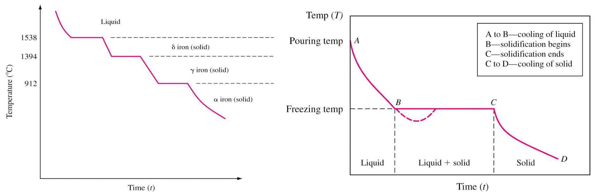
- Thermal arrest: while a pure metal solidifies, the heat lost to the surroundings equals the heat supplied by the solidifying metal, so the temperature stays constant (a plateau). Pure iron shows one plateau for solidification and one for each change of crystal structure. (This slide prints 912 °C for the γ → α change; Slide 6 prints 910 °C.)
- Alloys solidify over a range of temperatures: they show no thermal arrest, only changes of slope.
4.2 Building the diagram from cooling curves [Session 7 Slide 9]
A binary isomorphous system has two components with complete solid solubility. Its diagram is built from the cooling curves of several compositions: each curve gives the temperature where solidification starts and the one where it ends. Joining the start points gives the liquidus; joining the end points gives the solidus. Above the liquidus everything is liquid (L), below the solidus everything is a single solid solution (SS), and between them liquid and solid coexist (L + SS).
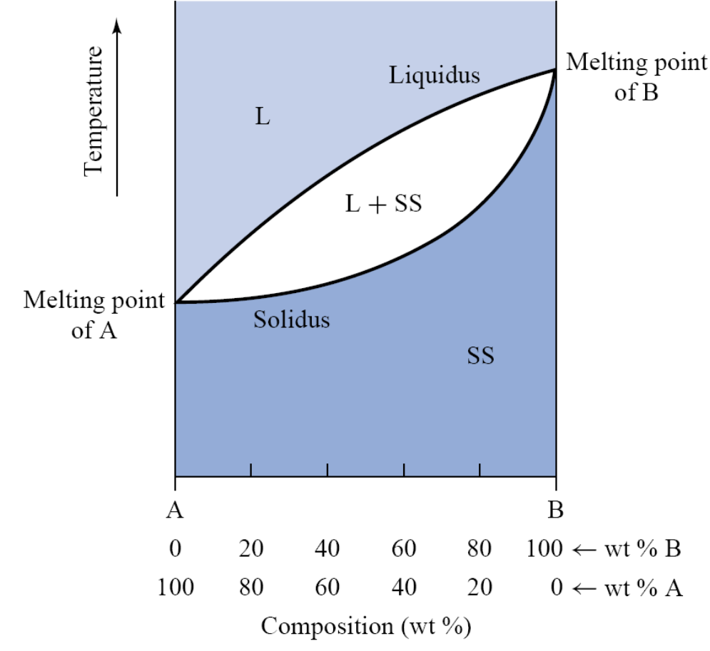
The slide compares the series of compositions with milk: whole, semi-skimmed and skimmed milk are mixtures of water and skim solids in different proportions, just as the alloys are mixtures of A and B.
4.3 Microstructure along the cooling [Session 7 Slide 10]
For an alloy of a given composition (the vertical line), the diagram tells what the microstructure is at each temperature:
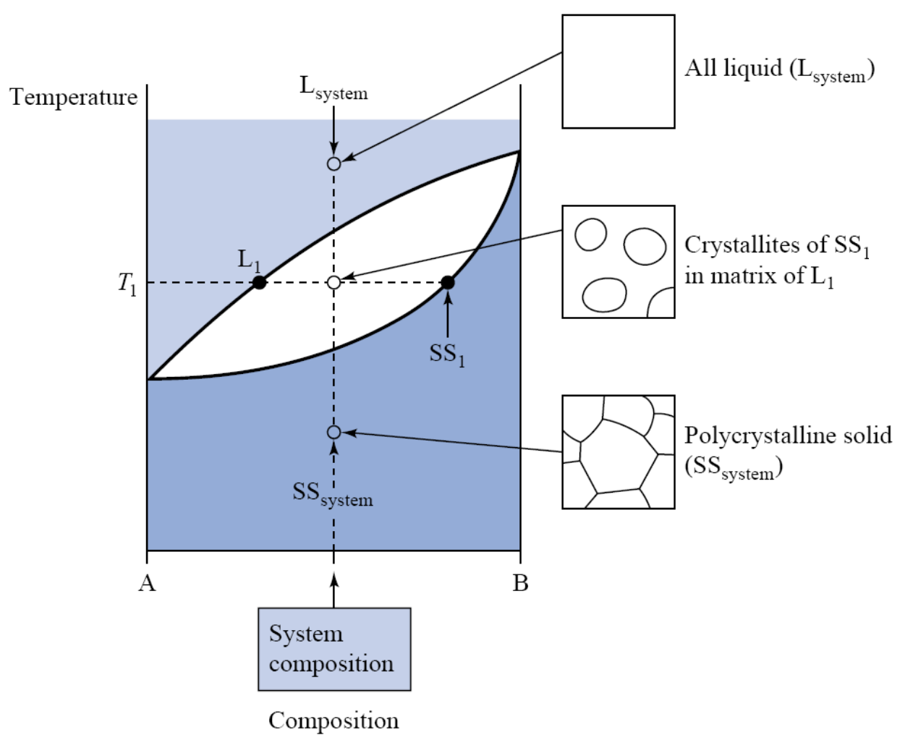
- above the liquidus: all liquid;
- at a temperature $T_1$ between the liquidus and the solidus: crystallites of the solid solution SS₁ in a matrix of liquid L₁; the compositions of L₁ and SS₁ are read on the liquidus and the solidus at $T_1$;
- below the solidus: a polycrystalline solid of a single phase, the solid solution, with the composition of the alloy.
The slide's analogy: milk alone is the liquid; milk with pieces of Manchego cheese is the two-phase mixture; the cheese alone is the solid.
4.4 Complete solid solubility [Session 7 Slide 11]
With complete solubility in the solid state:
- the material is a polycrystalline single-phase material: its microstructure (FCC, BCC or any other) is not different from that of the pure metal, because the atoms of B simply replace atoms of A in the same lattice;
- when solute is added, the melting temperature $T_m$ is modified;
- the alloy does not solidify at a constant temperature but over a range of temperatures, between the liquidus and the solidus.
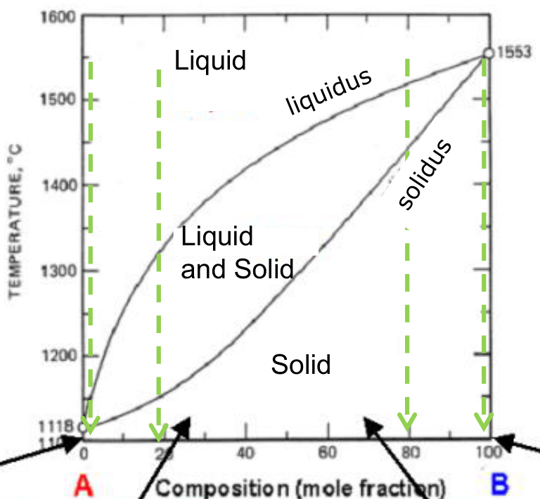
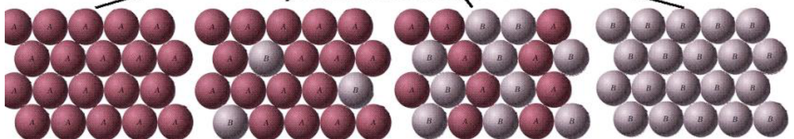
§ 5 Gibbs phase rule [Session 7 Slide 13]
The Gibbs phase rule counts how many variables can be changed independently while keeping the same phases in equilibrium:
- $F$: degrees of freedom, the number of independent variables available to the system;
- $C$: number of components;
- $P$: number of phases;
- $N$: number of non-compositional variables (for example pressure and temperature).
With pressure and temperature both free, $N = 2$ and $F = C - P + 2$. For routine processing of materials the pressure can be considered fixed at 1 atm, so only temperature remains and
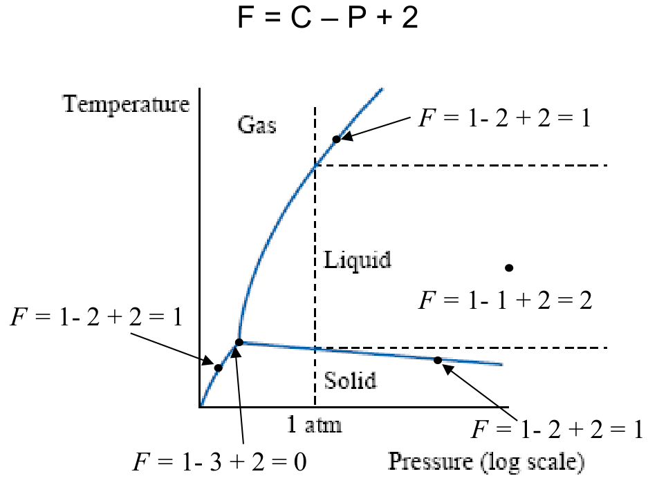
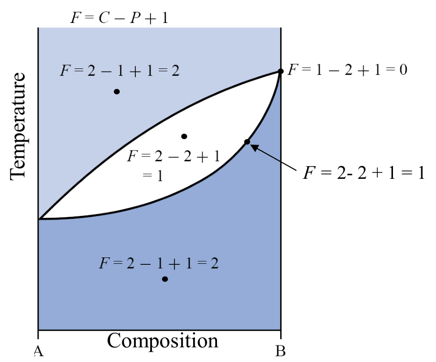
One component (water), $F = 1 - P + 2$ [Session 7 Slide 13]:
- inside a single-phase region (liquid): $F = 1 - 1 + 2 = 2$; temperature and pressure can both change without leaving the region;
- on a two-phase line (for example solid-liquid): $F = 1 - 2 + 2 = 1$; if the temperature is chosen, the pressure is fixed by the line;
- at the triple point: $F = 1 - 3 + 2 = 0$; three phases coexist only at one temperature and one pressure.
Two components at 1 atm, $F = 2 - P + 1$:
- in L or in the solid solution: $F = 2 - 1 + 1 = 2$; temperature and composition can both change;
- in L + solid (and on its boundaries): $F = 2 - 2 + 1 = 1$;
- at the melting point of pure B, a single component with two phases: $F = 1 - 2 + 1 = 0$, which is why a pure metal melts at one fixed temperature.
Consequence for the tie line (§6). In the α + L region of the Cu-Ni diagram $F = 1$. Choosing the temperature uses that single degree of freedom, so the compositions of the two phases are no longer free: at about 1250 °C (a reading of the figure) they can only be $C_L$ = 32 wt% Ni and $C_\alpha$ = 43 wt% Ni [Session 7 Slide 16]. Changing the overall composition of the alloy changes only the amounts of the two phases, not their compositions.
§ 6 Tie line and lever rule [Session 7 Slides 15-21]
In a two-phase region two questions are answered with two tools [Session 7 Slide 15]:
- Phase composition: the tie line. Draw a horizontal line (constant temperature) through the point of the alloy across the two-phase region. Its intersections with the phase boundaries give, on the composition axis, the composition of each phase.
- Phase amounts: the lever rule. The fraction of each phase is computed by taking the length of the tie line from the overall alloy composition to the phase boundary of the other phase, and dividing by the total length of the tie line [Session 7 Slide 16].
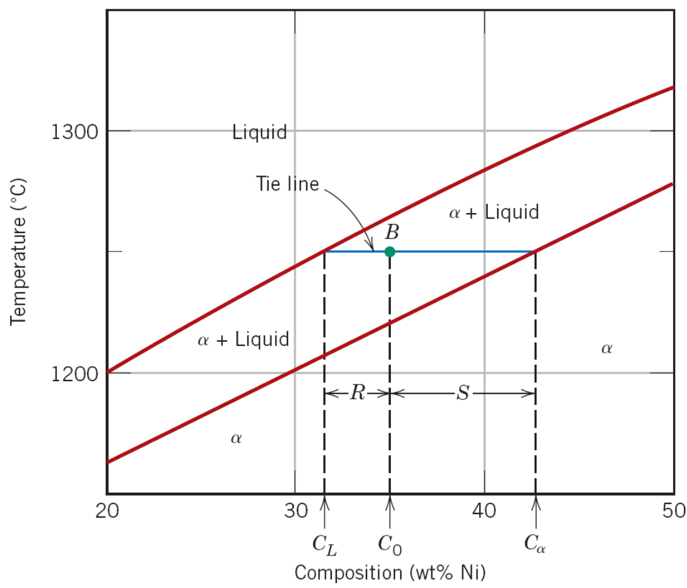
For the alloy B, with overall composition $C_0$ and the arms $R = C_0 - C_L$ and $S = C_\alpha - C_0$:
where $W_L$ is the mass fraction of liquid and $W_\alpha$ the mass fraction of α. They are mass fractions because the composition axis is in wt%; on an axis in atomic % the same construction gives atom (mole) fractions (extension, needed for the at.% diagrams of Problems 11-13 of the sheet).
Data from the slide. $C_0 = 35$ wt% Ni at point B. The slide prints the three compositions but neither the temperature nor the name of the system: about 1250 °C is a reading of the figure (the tie line lies between the 1200 and 1300 °C grid lines), and "Cu-Ni" is assumed from the wt% Ni axis (extension). The tie line meets the liquidus at $C_L = 32$ wt% Ni and the solidus at $C_\alpha = 43$ wt% Ni.
Step 1, the arms of the lever. $R = C_0 - C_L = 35 - 32 = 3$ wt% Ni and $S = C_\alpha - C_0 = 43 - 35 = 8$ wt% Ni; the whole tie line is $R + S = C_\alpha - C_L = 43 - 32 = 11$ wt% Ni.
Step 2, the fractions. Each phase takes the arm on the side of the other phase:
Step 3, checks. $W_L + W_\alpha = 8/11 + 3/11 = 1$. The nickel of the two phases adds up to the nickel of the alloy: $W_L C_L + W_\alpha C_\alpha = 0.727 \times 32 + 0.273 \times 43 = 23.27 + 11.73 = 35.0$ wt% Ni $= C_0$.
Answer. At about 1250 °C the alloy is 73 % liquid of 32 wt% Ni and 27 % solid α of 43 wt% Ni. The alloy point is closer to the liquidus, so there is more liquid.
Slide 21 writes $W_L = 0.72$ and $W_\alpha = 0.28$. The exact values are $8/11 = 0.727$ and $3/11 = 0.273$, so they round to 0.73 and 0.27, as the official solutions of the problem sheet write them (Solution problems Phase diagrams I.pdf, p. 5). The slide truncates $W_L$ and then takes $W_\alpha = 1 - W_L$.
Slide 23 prints the equilibrium compositions of the liquid and the solid at several temperatures for the same Cu-35 wt% Ni alloy. Applying the lever rule at each one:
| Point | $C_L$ (wt% Ni) | $C_\alpha$ (wt% Ni) | $W_L = \dfrac{C_\alpha - C_0}{C_\alpha - C_L}$ | $W_\alpha$ |
|---|---|---|---|---|
| b′ (liquidus) | 35 | 46 | $\dfrac{46 - 35}{46 - 35} = 1$ | 0 |
| c′ | 29 | 40 | $\dfrac{40 - 35}{40 - 29} = \dfrac{5}{11} = 0.455$ | 0.545 |
| d′ (solidus) | 24 | 35 | $\dfrac{35 - 35}{35 - 24} = 0$ | 1 |
Interpretation. At b′ the first solid appears, of 46 wt% Ni, in a liquid that still has the composition of the alloy. As the temperature falls both phases become poorer in Ni (the liquid follows the liquidus, the solid follows the solidus) and the amount of solid grows. At d′ the solid has reached the composition of the alloy, 35 wt% Ni, and the last liquid disappears: in equilibrium, solidification ends on the solidus.
§ 7 Non-equilibrium solidification [Session 7 Slides 23-24]
When the alloy goes down through the phase diagram too quickly (high cooling rates), solid-state diffusion has no time to keep the whole solid at the equilibrium composition. Only the surface of each growing crystal has the composition of the solidus; the inside keeps the composition it had when it formed. The result is a microstructure of heterogeneous composition, called microsegregation (or cored structure).
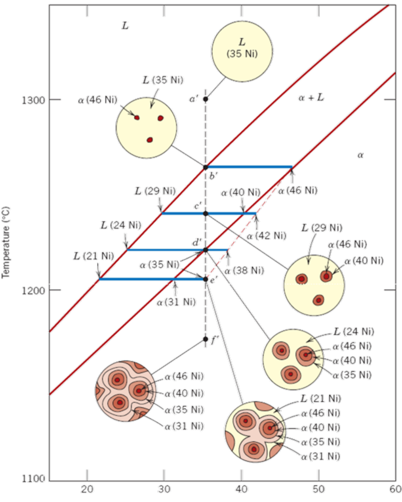
In the Cu-35 wt% Ni alloy the first solid is α of 46 wt% Ni (b′). At c′ the new layer is α of 40 wt% Ni, but the crystal still has its 46 % core, so its average composition is 42 wt% Ni instead of 40; at d′ the average is 38 instead of 35; at e′ it is 35. The average compositions follow a non-equilibrium solidus (dashed) that lies to the right of the equilibrium solidus, so liquid survives below the equilibrium solidus and solidification ends only at e′. The final grains are cored: 46 wt% Ni at the centre and 31 wt% Ni at the edge (f′).
The same behaviour in an alloy of Ni-30 wt% Cu (Slide 24): with fast cooling the solid follows the non-equilibrium solidus α′₂ … α′₇ and solidification ends at $T_7$ instead of $T_5$:
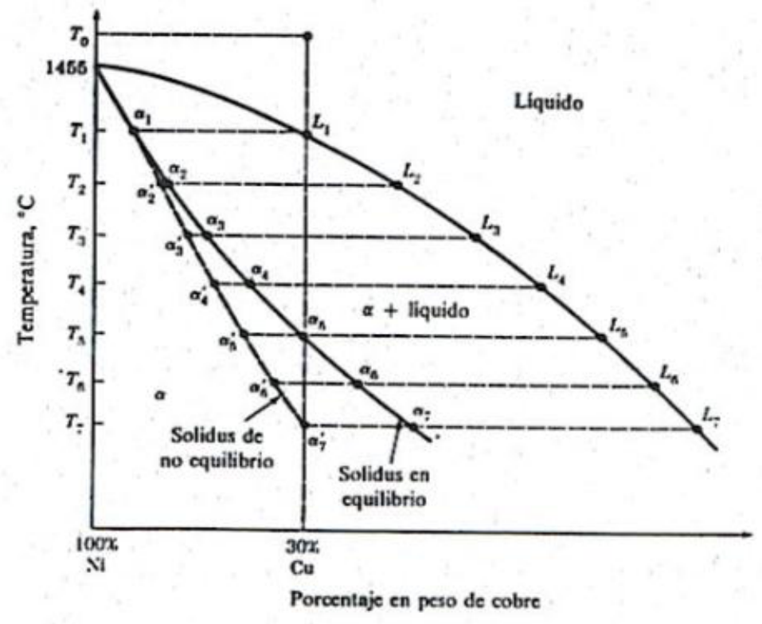
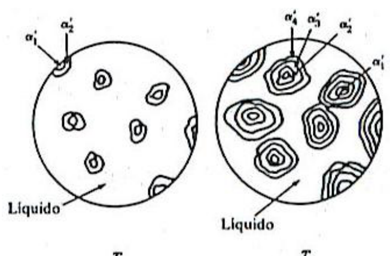
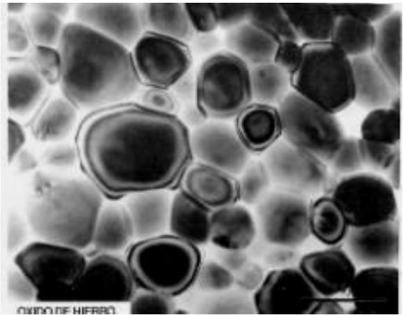
Removing the coring. Microsegregation can be eliminated with a homogenisation heat treatment at a temperature below the solidus (for example $T_{TT} < T_7$, below the lowest temperature at which liquid could exist). During the treatment, solid-state diffusion (Topic 3) evens out the composition inside the grains [Session 7 Slide 24].
Data from the slide. At d′ the liquid is $C_L$ = 24 wt% Ni, and the average composition of the cored solid is 38 wt% Ni (the dashed line). The alloy is $C_0$ = 35 wt% Ni.
Lever rule on the average composition. The tie line now ends on the non-equilibrium solidus, at 38 wt% Ni:
Comparison. In equilibrium (Worked example 4) the alloy is completely solid at d′. With fast cooling about 21 % of the alloy is still liquid there; solidification ends only at e′, where the average composition of the solid reaches 35 wt% Ni and $W_L = (35 - 35)/(35 - 21) = 0$. The slide gives the average compositions; the lever rule is used here with them exactly as in §6.
§ 8 Binary eutectic systems [Session 7 Slides 26-32]
8.1 Partial solid solubility and the eutectic reaction [Session 7 Slides 26-27]
When the two components have only partial solid solubility, two solid solutions appear: α, rich in A, and β, rich in B. Their regions are bounded by three kinds of line:
- the liquidus, above which everything is liquid;
- the solidus, below which there is no liquid;
- the solvus, which gives the maximum solubility of B in α (and of A in β) at each temperature in the solid state.
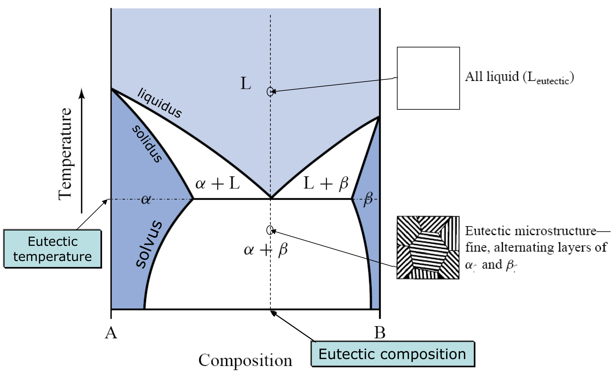
The two liquidus lines meet at the eutectic point, defined by the eutectic temperature and the eutectic composition. A liquid of eutectic composition does not pass through a two-phase L + solid region: at the eutectic temperature it transforms at once into two solids, in a fine microstructure of alternating layers of α and β.
Invariant reactions are produced at a fixed composition and a fixed temperature for a given system, and the result also remains fixed. In a system of two partially soluble components, a solidification reaction occurs at a fixed composition and temperature, with a cooling curve similar to that of a pure solid [Session 7 Slide 27]. This is the eutectic reaction:
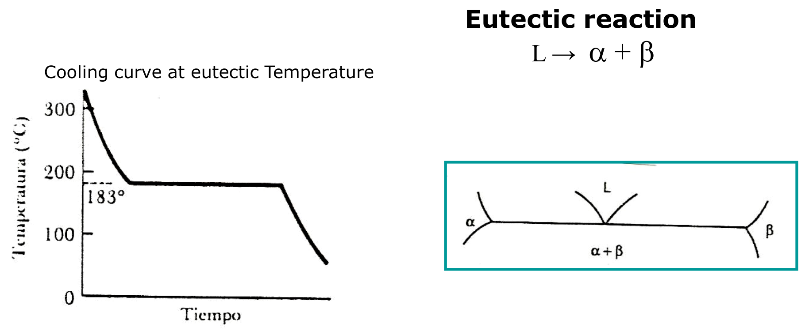
With the phase rule of §5 at 1 atm: at the eutectic point three phases (L, α, β) coexist in a two-component system, so $F = 2 - 3 + 1 = 0$. Temperature and the compositions of the three phases are all fixed, which is why the reaction is invariant and the cooling curve shows a plateau.
8.2 The Pb-Sn system and the eutectic microstructure [Session 7 Slides 28-29]
The Pb-Sn diagram is the example of the slides. Its eutectic point is at 61.9 wt% Sn and 183 °C. At 183 °C, α can dissolve at most 18.3 wt% Sn and β contains 97.8 wt% Sn [Session 7 Slides 27, 32]. The melting points of the pure metals are 327 °C (Pb) and 232 °C (Sn) (Problems T4_PhaseDiagrams I.pdf, p. 1).
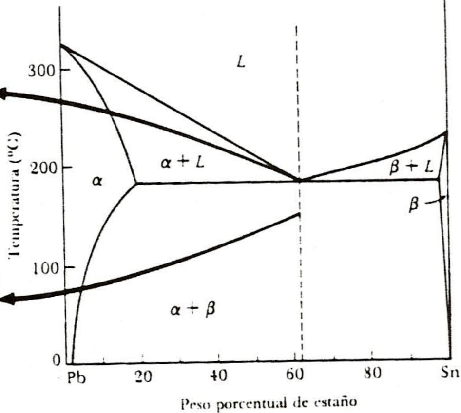
A liquid of 61.9 wt% Sn, cooled to 183 °C, forms colonies of α and β layers that grow together into the liquid until the whole structure is eutectic (the eutectic product). The layers alternate with a spacing λ:
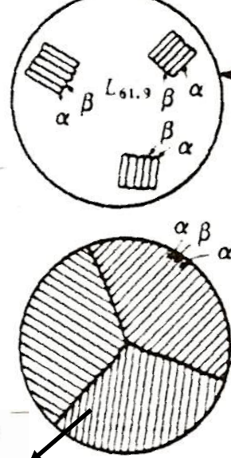
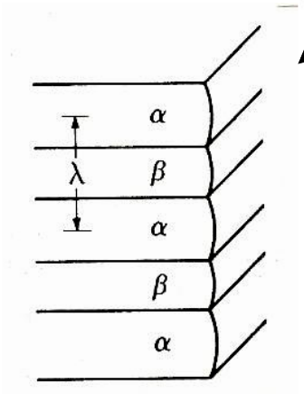
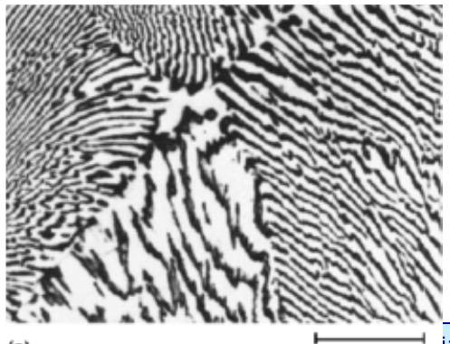
The shape of the eutectic changes from one system to another, as the four micrographs of Slide 29 show (Sn-50In, Al-13Si, Al-33Cu and Mg-37Sn): in them one phase appears as rods, plates, globules or needles inside the other (a description of those micrographs).
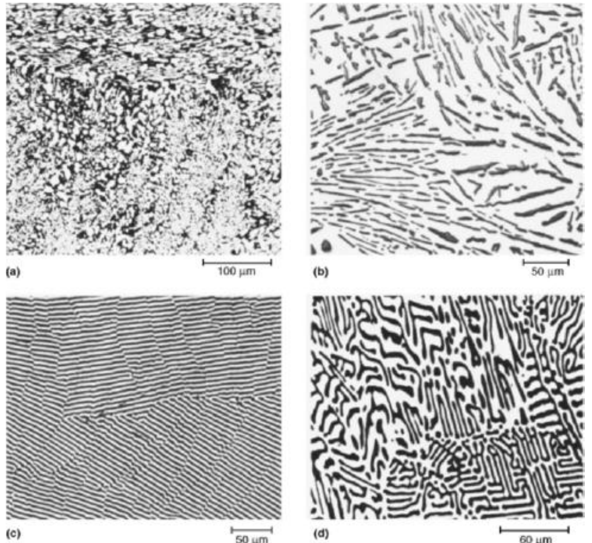
The diagram printed in the problem sheet (Problems T4_PhaseDiagrams I.pdf, p. 1) and the official solutions use 19.2 wt% Sn for α and 97.5 wt% Sn for β at 183 °C, instead of the 18.3 and 97.8 of Slide 32: they come from a different drawing of the same system. The worked examples of this page use the slide values; the solved problems use the values of the sheet.
Question. A Pb-61.9 wt% Sn alloy (eutectic composition) is cooled just below 183 °C. What are the amounts of α and β in the eutectic?
Tie line. Just below 183 °C the tie line crosses the α + β region from $C_\alpha$ = 18.3 to $C_\beta$ = 97.8 wt% Sn; its length is $97.8 - 18.3 = 79.5$ wt% Sn.
Lever rule.
Check. $0.452 + 0.548 = 1$ and $0.452 \times 18.3 + 0.548 \times 97.8 = 8.27 + 53.59 = 61.9$ wt% Sn $= C_0$.
Answer. The alloy is 100 % eutectic microconstituent, and inside it 45.2 % of the mass is α and 54.8 % is β. Every eutectic of this system, whatever the alloy it comes from, has these proportions (used in Worked example 7).
8.3 Hypoeutectic and hypereutectic alloys [Session 7 Slides 30-31]
An alloy between the α limit and the eutectic composition is hypoeutectic; one between the eutectic composition and the β limit is hypereutectic.
Hypoeutectic alloy (the slide uses Pb-Sn with about 30 wt% Sn, a reading of the figure):
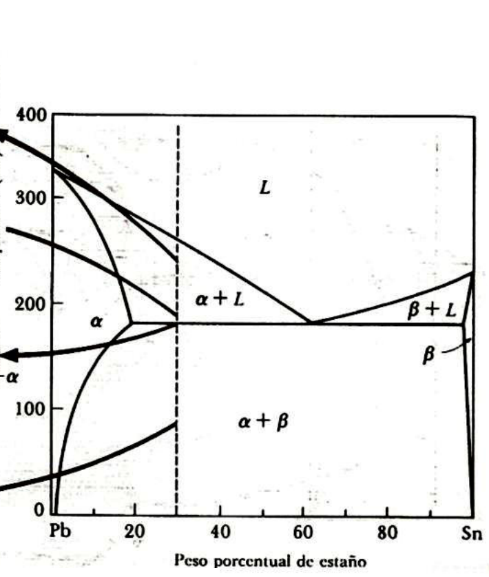
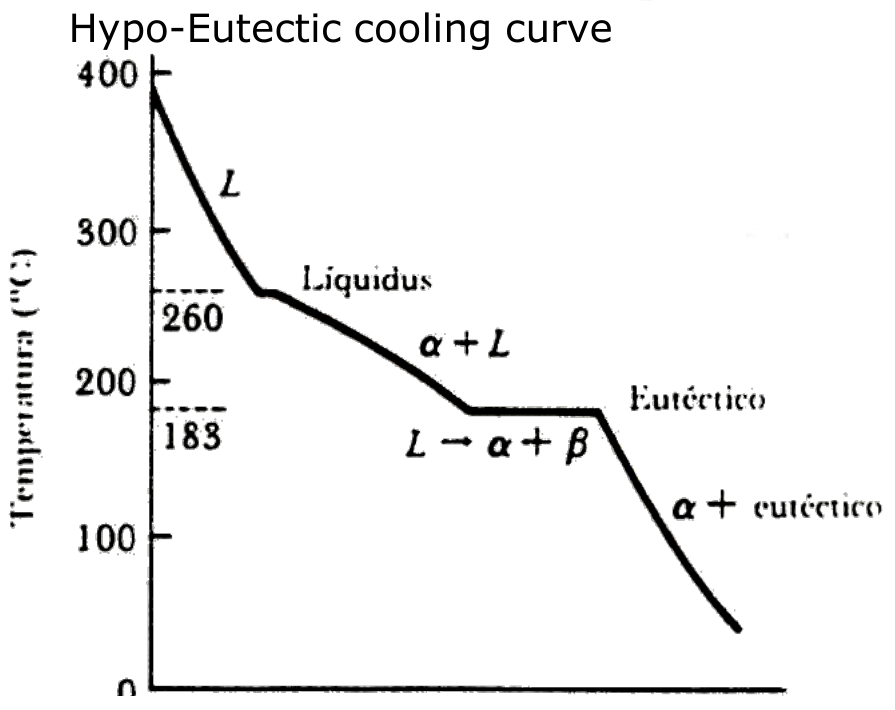
- Above the liquidus the alloy is liquid. The cooling curve shows the liquidus at 260 °C, where crystals of α start to form.
- Between 260 and 183 °C, α and liquid coexist; α grows, and the liquid becomes richer in Sn along the liquidus.
- Just above 183 °C the solid is α of 18.3 wt% Sn and the liquid has reached the eutectic composition, 61.9 wt% Sn.
- At 183 °C that liquid transforms at constant temperature into the eutectic ($L \rightarrow \alpha + \beta$): a plateau in the cooling curve.
- Below 183 °C the structure is primary (proeutectic) α surrounded by eutectic.
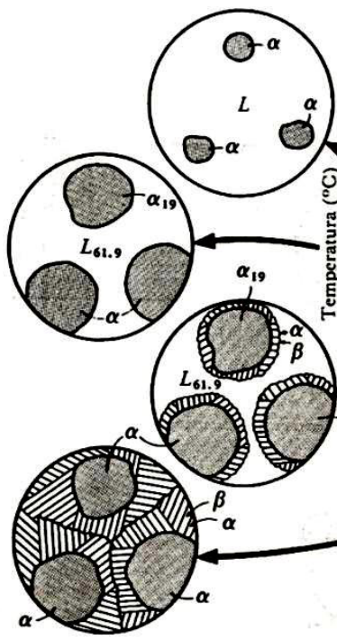
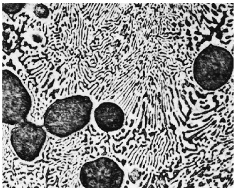
In a casting, the primary α grows from the mould wall, and the liquid trapped between the crystals is the last to solidify, with the eutectic composition:
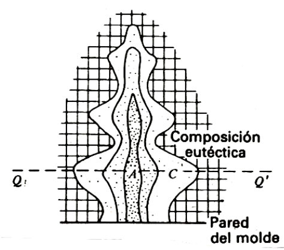
Hypereutectic alloy: the same sequence with the roles of the solids exchanged. Primary β forms between the liquidus and the eutectic temperature, the remaining liquid gives the eutectic at the eutectic temperature, and the final structure is primary β plus eutectic.
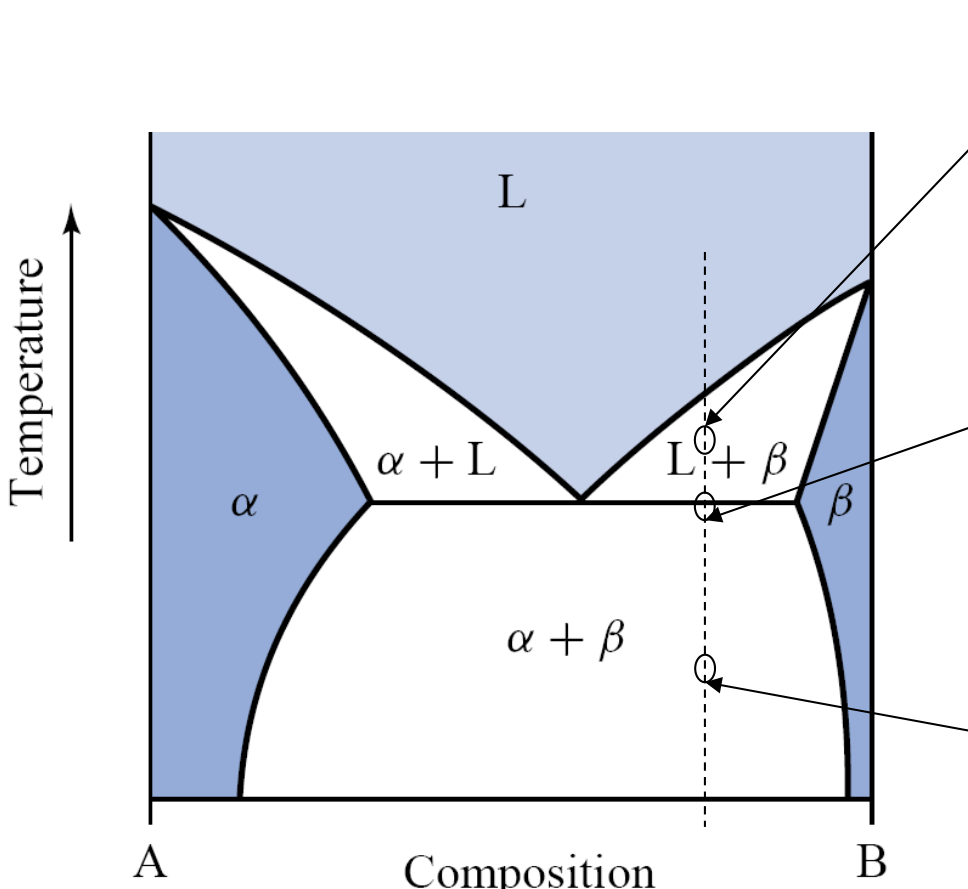
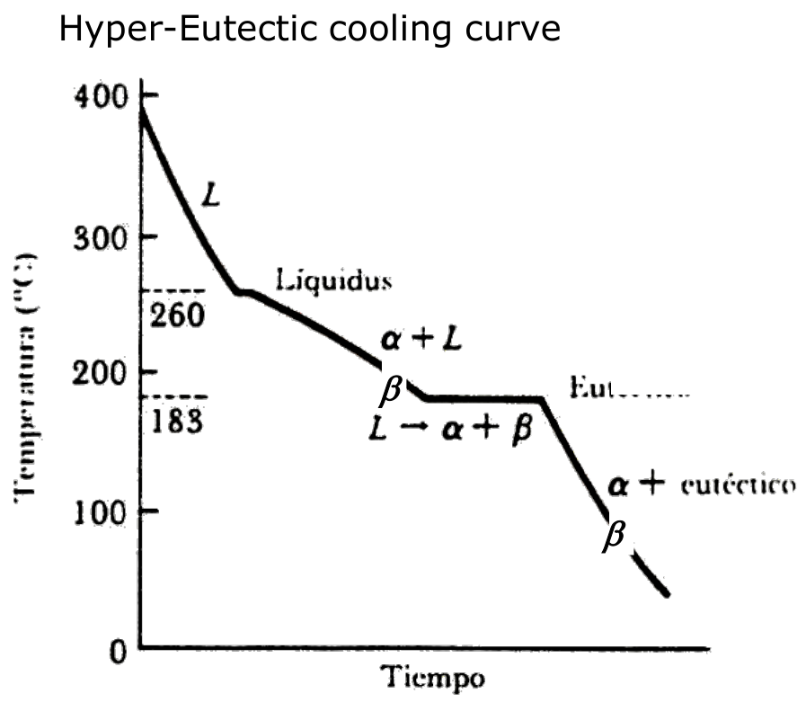
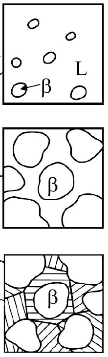
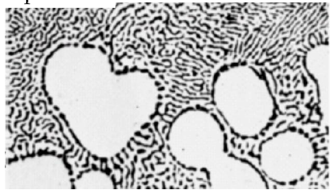
(The cooling curve of Slide 31 repeats the temperature labels of the hypoeutectic curve, 260 and 183 °C; for a hypereutectic Pb-Sn alloy the liquidus is below 232 °C, so read them only as the liquidus temperature $T_L$ and the eutectic temperature $T_E$ of the alloy.)
8.4 Lever rule in binary eutectic diagrams [Session 7 Slide 32]
Just below the eutectic temperature, the tie line of a hypoeutectic alloy $C'_4$ is cut by the alloy and by the eutectic composition into three segments, $P$, $Q$ and $R$:
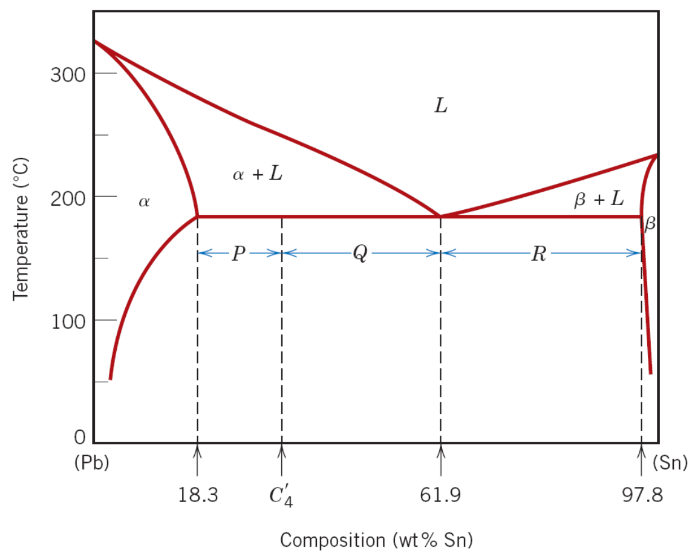
- $W_e$: fraction of eutectic microconstituent, equal to $W_L$, the fraction of liquid just above the eutectic temperature (all that liquid becomes eutectic);
- $W_{\alpha'}$: fraction of α′ phase, the primary α;
- $W_\alpha$: total fraction of α (primary α plus the α inside the eutectic);
- $W_\beta$: fraction of β phase (all of it inside the eutectic).
The first two use the short tie line between α and the eutectic liquid (microconstituents); the last two use the whole tie line between α and β (phases).
Data. Alloy $C_0$ = 30 wt% Sn (the hypoeutectic alloy of Slide 30), just below 183 °C, with the values of Slide 32: $C_\alpha$ = 18.3, $C_e$ = 61.9, $C_\beta$ = 97.8 wt% Sn.
Step 1, the segments. $P = C_0 - C_\alpha = 30 - 18.3 = 11.7$; $Q = C_e - C_0 = 61.9 - 30 = 31.9$; $R = C_\beta - C_e = 97.8 - 61.9 = 35.9$; so $P + Q = 43.6$ and $P + Q + R = 79.5$ (all in wt% Sn).
Step 2, microconstituents (short tie line, from α to the eutectic liquid):
Step 3, phases (whole tie line, from α to β):
Step 4, the α inside the eutectic. It is the total α minus the primary α: $W_{\alpha,e} = W_\alpha - W_{\alpha'} = 0.853 - 0.732 = 0.121$.
Check, phases against microconstituents. By Worked example 6 every eutectic is 45.2 % α and 54.8 % β. Then $W_e \times 0.452 = 0.268 \times 0.452 = 0.121 = W_{\alpha,e}$ and $W_e \times 0.548 = 0.268 \times 0.548 = 0.147 = W_\beta$: both descriptions of the alloy agree.
Answer. Just below 183 °C the alloy is 73.2 % primary α and 26.8 % eutectic. Counting phases, it is 85.3 % α (73.2 % primary plus 12.1 % in the eutectic) and 14.7 % β. Just above 183 °C the same lever gives 73.2 % α of 18.3 wt% Sn and 26.8 % liquid of 61.9 wt% Sn: that liquid is what becomes the eutectic.
Part II — Phase diagrams II (Session 8)
§ 9 Solid-state precipitation [Session 8 Slides 2-4]
9.1 Below the solid solubility limit [Session 8 Slide 2]
An alloy whose composition stays inside the α region all the way down to room temperature never crosses the solvus: once solid, it is single-phase α. In the Pb-Sn example, a Pb-1 wt% Sn alloy ($C_1$) is:
- (a) liquid at 350 °C;
- (b) at about 330 °C, on the liquidus: the solid phase α begins to form (α + L);
- (c) only α at 270 °C, and it stays α on further cooling.
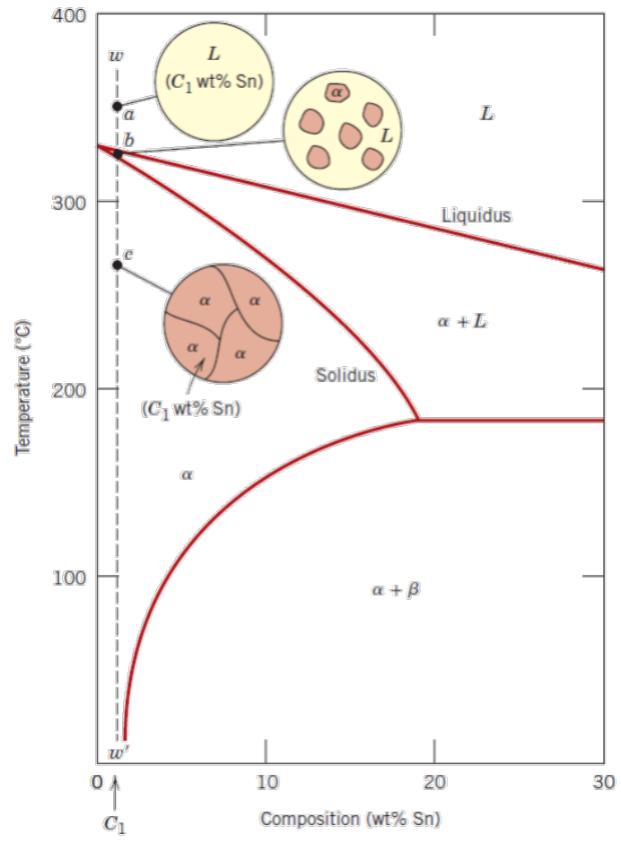
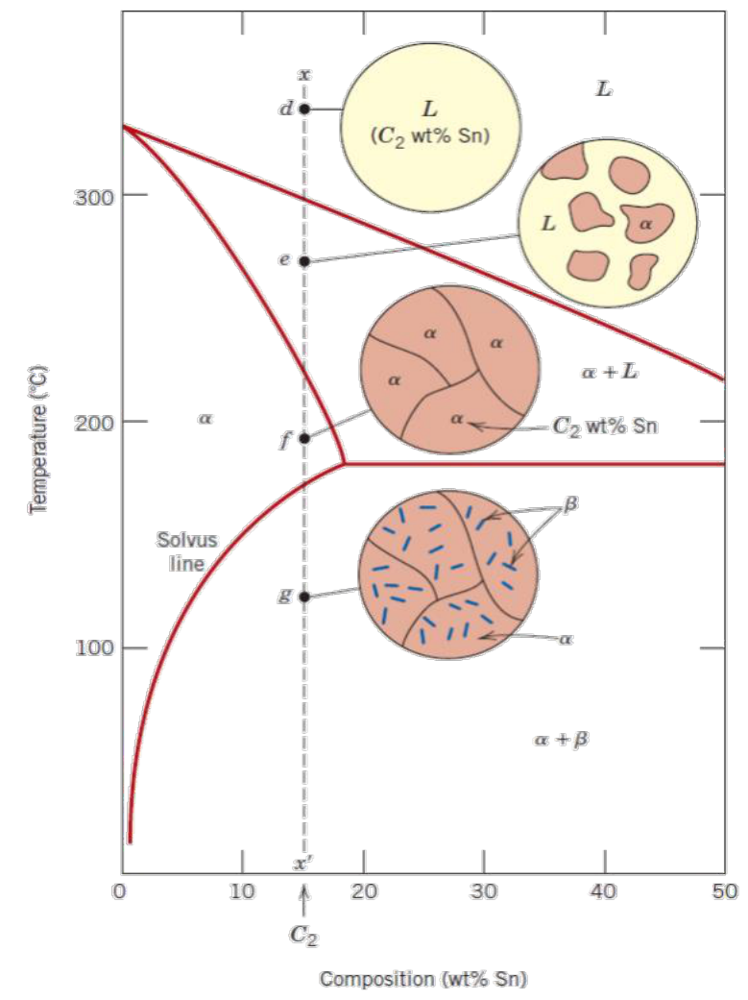
9.2 Above the solid solubility limit: precipitation [Session 8 Slides 3-4]
Precipitation in the solid state: when an alloy crosses the solvus line on cooling, the solid solubility of α is exceeded, and small particles of the β phase form; they grow as the temperature decreases [Session 8 Slide 3].
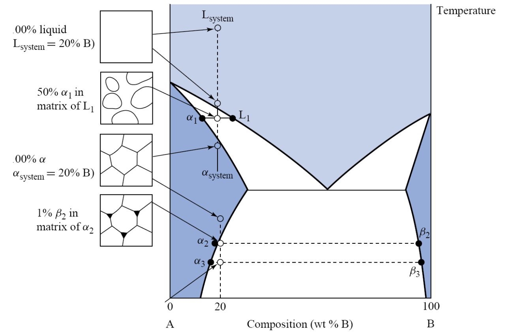
For the alloy of 20 % B of the slide: all liquid; α₁ crystals in a matrix of liquid L₁; 100 % α with the composition of the alloy; and, below the solvus, small β₂ particles in a matrix of α₂ (mostly at the grain boundaries), which become more and grow at lower temperatures (α₃ + β₃).
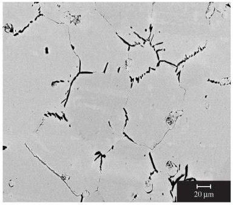
The Pb-Sn example of Slide 4 uses a Pb-16 wt% Sn alloy ($C_2$, also in the figure of §9.1):
- (d) liquid at 350 °C;
- (e) at 270 °C, solid α has begun to form: α + L;
- (f) only α at 192 °C;
- (g) α + β at 121 °C: the alloy has crossed the solvus and β has precipitated inside the α.
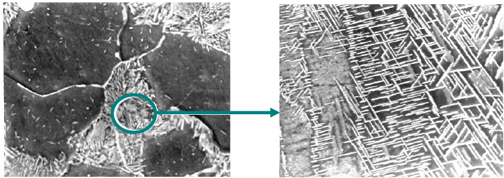
Readings of the figure. On Slide 4 the vertical line of $C_2$ = 16 wt% Sn meets the solvus at about 172 °C; at point g (121 °C) the solvus is at about 6 wt% Sn. The β boundary at that temperature is close to pure Sn; Slide 32 of Session 7 places it at about 99 wt% Sn.
Above about 172 °C (point f, 192 °C) the alloy is single-phase α of 16 wt% Sn: $W_\alpha = 1$.
At 121 °C (point g), lever rule on the tie line from 6 to 99 wt% Sn:
Interpretation. About 11 % of the alloy has turned into β particles between 172 and 121 °C. As the temperature falls further the solvus moves to lower Sn contents, so the α holds less Sn and more β precipitates: the particles grow, as the slide says. These numbers depend on readings of the figure and are approximate.
§ 10 Invariant reactions [Session 8 Slides 6-12]
10.1 The five reactions [Session 8 Slide 6]
An invariant reaction happens at a fixed temperature, with fixed compositions of the three phases involved ($F = 2 - 3 + 1 = 0$ at constant pressure, §5). The slides list five types; the eutectoid and the peritectoid happen entirely in the solid state:
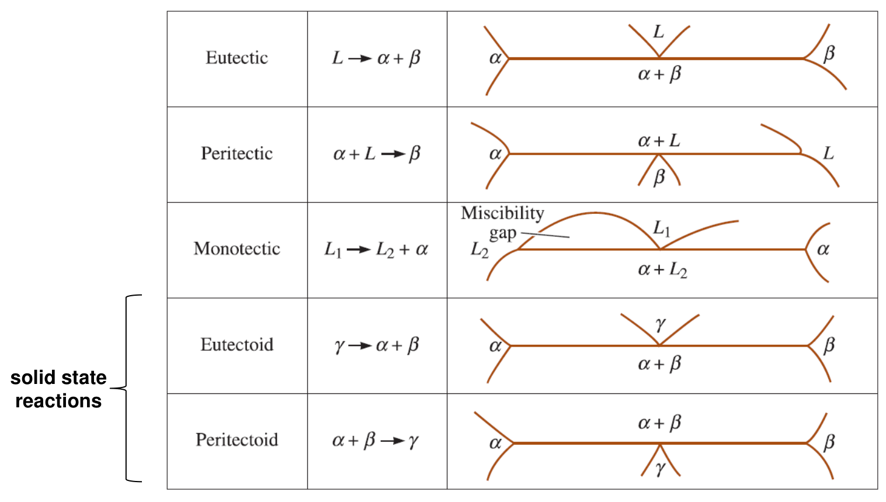
| Reaction | On cooling | Shape on the diagram |
|---|---|---|
| Eutectic | $L \rightarrow \alpha + \beta$ | a liquid region ends in a V on the horizontal line |
| Peritectic | $\alpha + L \rightarrow \beta$ | a solid region ends in an inverted V below the line |
| Monotectic | $L_1 \rightarrow L_2 + \alpha$ | a liquid miscibility gap above the line |
| Eutectoid | $\gamma \rightarrow \alpha + \beta$ | like the eutectic, with a solid γ instead of L |
| Peritectoid | $\alpha + \beta \rightarrow \gamma$ | like the peritectic, with two solids |
10.2 Eutectoid reaction [Session 8 Slide 7]
Eutectoid reaction: an invariant reaction where a solid phase transforms into two solid phases: $\gamma \rightarrow \alpha + \beta$.
Example, Cu-Zn at 560 °C (74 % Zn; here and in the next examples the slides print the compositions as % of the second element, with no basis):
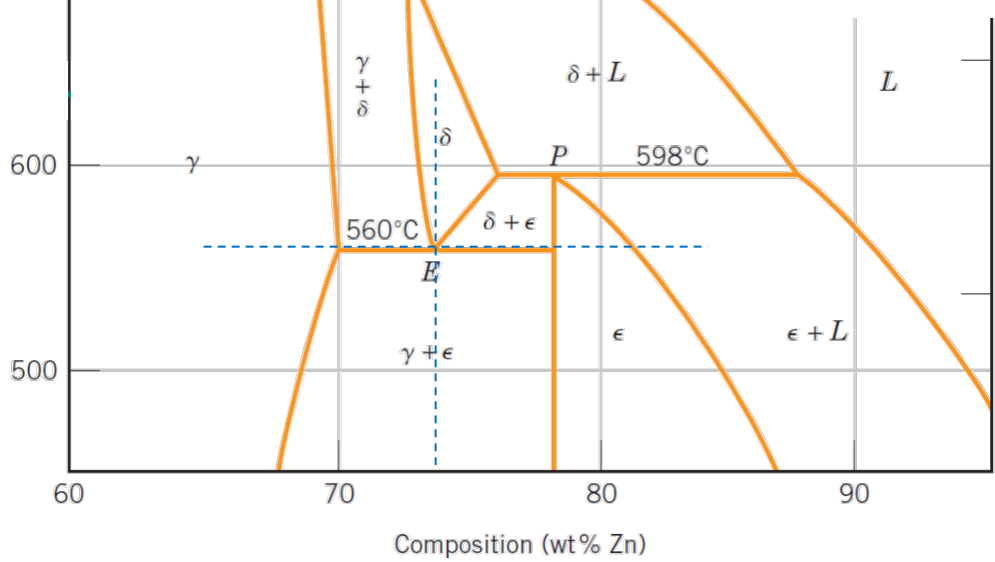
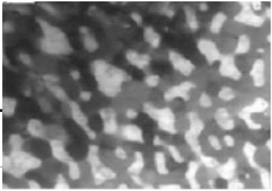
Question. A Cu-74 wt% Zn alloy (all δ) is cooled just below 560 °C. How much γ and how much ε does it contain?
Lever rule on the tie line from γ (70 % Zn) to ε (78 % Zn), length $78 - 70 = 8$:
Check: $0.50 \times 70 + 0.50 \times 78 = 74$ % Zn. Answer: the eutectoid product is half γ and half ε, a fine mixture of the two solids, as in the micrograph. On heating the reaction runs backwards and the mixture turns into single-phase δ.
10.3 Peritectic reaction [Session 8 Slides 8-9]
Peritectic reaction: an invariant reaction where a solid and a liquid phase transform into a different solid phase, $\alpha + L \rightarrow \beta$. The peritectic point is the invariant point where this happens [Session 8 Slide 8].
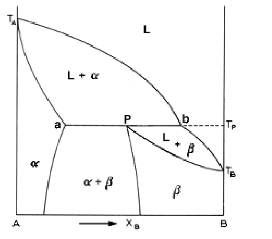
Example, Fe-Ni at 1517 °C and 4.3 % Ni:
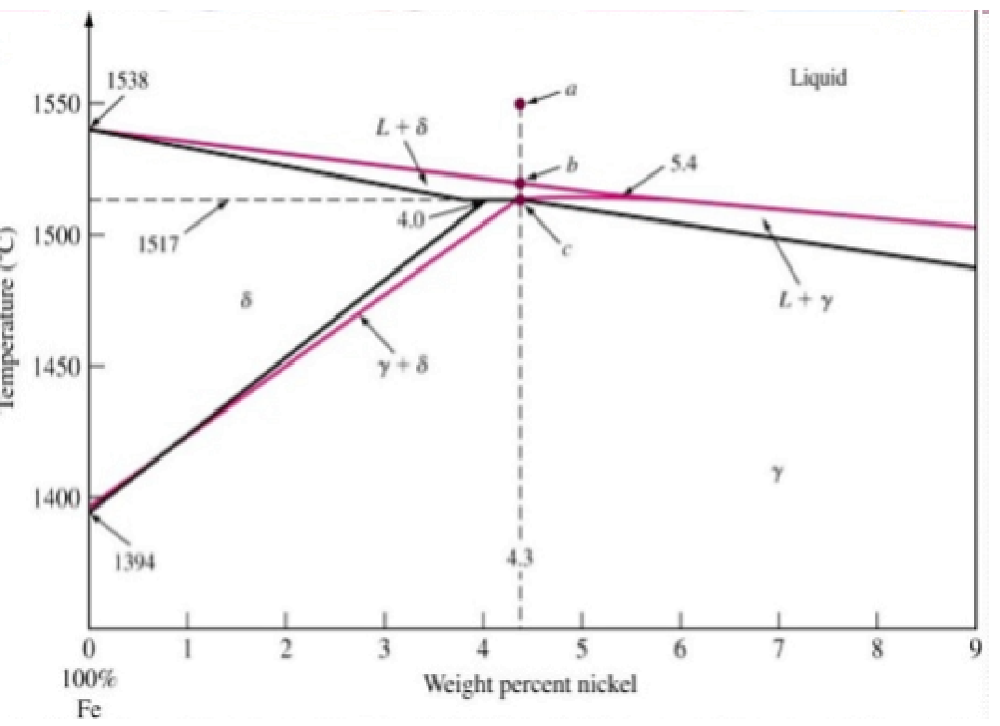
Just above 1517 °C the alloy is δ (4.0 % Ni) + L (5.4 % Ni); tie line length $5.4 - 4.0 = 1.4$:
Just below 1517 °C both react and give γ of 4.3 % Ni, the composition of the alloy, so the alloy is 100 % γ.
Check: $0.786 \times 4.0 + 0.214 \times 5.4 = 3.14 + 1.16 = 4.30$ % Ni. The liquid and the δ are used up together because the alloy has exactly the peritectic composition.
Second example, Pt-Ag at 1186 °C (42.4 % Ag) [Session 8 Slide 9]:
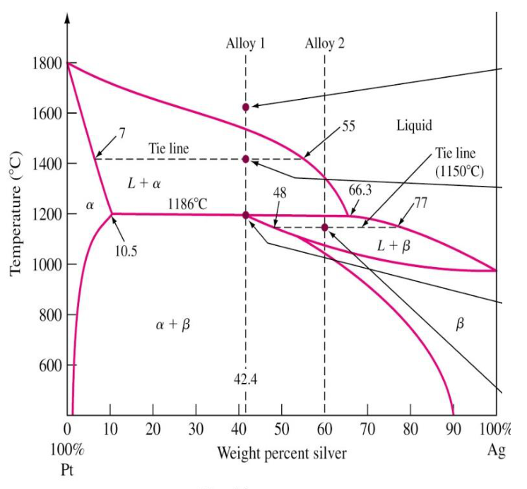
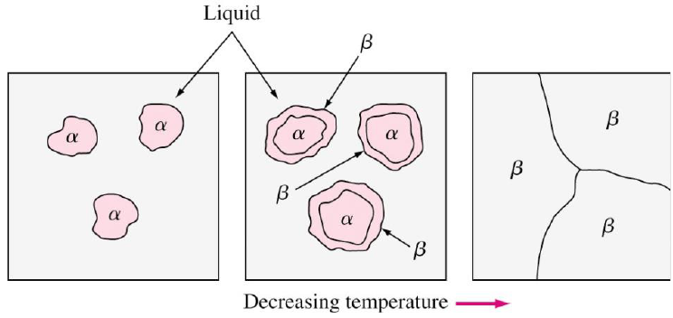
Alloy 1, 42.4 % Ag, at 1400 °C. Liquid (55 % Ag) + α (7 % Ag); tie line length $55 - 7 = 48$:
Alloy 1 at 1186 °C + ΔT. Liquid (66.3 % Ag) + α (10.5 % Ag); length $66.3 - 10.5 = 55.8$:
Alloy 1 at 1186 °C − ΔT. Only β, of 42.4 % Ag: 100 %. The liquid and the α have reacted completely ($\alpha + L \rightarrow \beta$).
Alloy 2 (about 60 % Ag, a reading of the figure) at 1150 °C: L + β, with the tie line of the slide from β (48 % Ag) to L (77 % Ag), length 29:
Alloy 2 has more Ag than the peritectic composition, so after the peritectic reaction some liquid is left (L + β); it solidifies completely on further cooling.
For 1186 °C + ΔT the slide writes "Alpha: (66.3 − 10.5)/(66.3 − 10.5) = 43 %". The numerator must be $66.3 - 42.4 = 23.9$ (the arm on the side of the liquid); $(66.3 - 10.5)/(66.3 - 10.5)$ would be 1. The value 43 % is right.
Rapid (non-equilibrium) solidification in peritectic systems [Session 8 Slide 10]:
- Surrounding or encasement: during the peritectic reaction $L + \alpha \rightarrow \beta$, the β formed surrounds the primary α.
- β then acts as a diffusion barrier (B atoms from the liquid and A atoms from α must cross it), which results in coring: the reaction does not finish and the structure is not the equilibrium one.
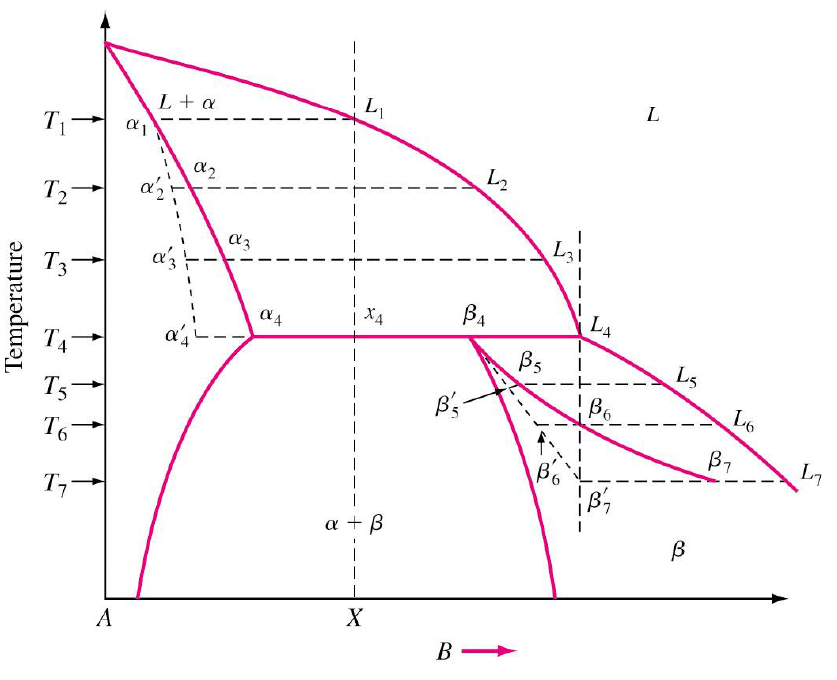
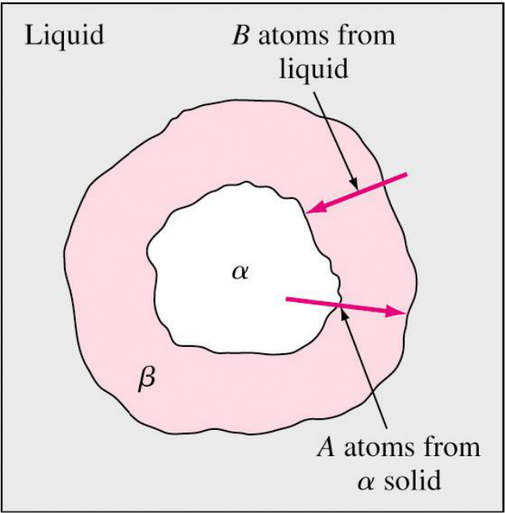
10.4 Peritectoid reaction [Session 8 Slide 11]
Peritectoid reaction: an invariant reaction where two solid phases transform into a new solid phase, $\beta + \alpha \rightarrow \gamma$. The peritectoid point is the invariant point where it happens.
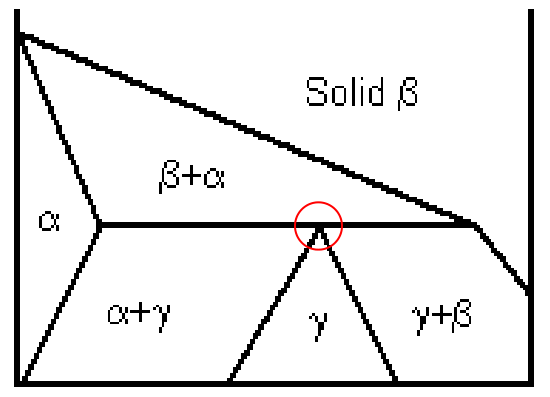
10.5 Monotectic reaction [Session 8 Slide 12]
Monotectic reaction: an invariant reaction where a liquid phase transforms into a solid phase plus another liquid (the liquid has a miscibility gap): $L_1 \rightarrow L_2 + \alpha$. The monotectic point is the invariant point where this happens.
Example, Cu-Pb at 955 °C (36 % Pb):
Tie line from α (0 % Pb) to $L_2$ (87 % Pb), length 87:
Interpretation. Just below 955 °C the alloy is 59 % solid copper and 41 % of a second liquid, rich in lead (87 %). That liquid stays liquid down to 326 °C, where $L_2$ undergoes a eutectic reaction, $L_2 \rightarrow \alpha + \beta$ (a reading of the diagram, which shows the 326 °C line with α + β below it; the slide text does not name it); the slide's diagram shows the region α + L₂ between the two lines.
§ 11 Intermetallic compounds [Session 8 Slides 14-15]
An intermetallic compound is made up of two or more elements (components) and produces a new phase with its own composition, crystal structure and properties [Session 8 Slides 14-15].
- Terminal phases occur at the ends of the phase diagram (α and ζ in the figure; the slide text writes ξ).
- Intermediate phases occur in a composition range inside the diagram (β, γ, δ, ε).
- The percentage of ionic or covalent bonding in an intermetallic compound depends on the electronegativity difference between the elements (Topic 1).
Two kinds of compound [Session 8 Slide 15]:
- Stoichiometric: fixed composition, a fixed ratio of the atoms involved; it is drawn as a vertical line in the phase diagram. Example in Ti-B: $\text{Ti}_3\text{B}_4$.
- Non-stoichiometric: a range of compositions, an intermediate solid solution. Examples in Ti-B: TiB and $\text{TiB}_2$.
The label under the Ti-B diagram of Slide 15 reads "% wt Boron", but the compounds sit at about 50 % (TiB) and 67 % ($\text{TiB}_2$), which are their atomic percentages (one B per Ti, two B per Ti). The same diagram in the problem sheet (Problems T4_PhaseDiagrams I.pdf, p. 7) has the atomic scale on top and the weight scale below, where TiB is at about 18 wt% and $\text{TiB}_2$ at about 31 wt% B.
§ 12 Congruent and incongruent melting [Session 8 Slide 17]
- Congruent melting: an intermetallic compound melts congruently when the liquid formed on melting (solid → liquid) keeps its composition. Examples: $\text{MgNi}_2$ and the pure metals.
- Incongruent melting: the composition is not kept on melting, and a different solid appears: the compound gives a liquid plus another solid. Example: $\text{Mg}_2\text{Ni}$, which is formed on cooling by a peritectic reaction of the type $\alpha + L \rightarrow \beta$.
On the diagram, a congruently melting compound sits at a maximum of the liquidus (it melts at a single temperature, like a pure metal), while an incongruently melting one ends at a horizontal peritectic line.
Reading the Ti-B diagram of Slide 15:
- $\text{TiB}_2$ reaches the top of the liquidus dome, at 3225 °C: the liquid formed there has the same composition as the solid, so $\text{TiB}_2$ melts congruently.
- $\text{Ti}_3\text{B}_4$ and TiB end at horizontal lines near 2200 °C, below the liquidus: on heating, each gives liquid plus a different solid (for $\text{Ti}_3\text{B}_4$, liquid + $\text{TiB}_2$). Both melt incongruently; on cooling they form by peritectic reactions.
This is the classification used in Problem 15 of the sheet.
Part III — Phase diagrams III: the Fe-C system (Session 9)
§ 13 The Fe-C system [Session 9 Slides 2-11]
13.1 Why it matters [Session 9 Slide 2]
- The Fe-C system is a binary alloy system of iron and carbon.
- It is the most important alloy system of our civilisation: it gives steels and cast irons.
- It is a binary eutectic system.
- Depending on the carbon content, temperature, cooling rate, pressure and so on, different microstructures can be developed, with different properties and applications.
13.2 Allotropic phases of pure iron [Session 9 Slide 3]
Allotropy is the existence of a chemical element in two or more forms, which may differ in the arrangement of the atoms in the crystalline solid (Topic 2). Iron undergoes two changes of crystal structure before it melts:
The temperatures on the scale of Slide 3 (910, 1390 and 1535 °C) differ by a few degrees from those printed on the Fe-C diagram of the same session (912, 1394 and 1538 °C, Slide 4); the diagram values are used in the rest of this page.
13.3 The Fe-Fe₃C diagram [Session 9 Slide 4]
The diagram used in practice is metastable: its right-hand end is 6.67 wt% C, the stoichiometric composition of Fe₃C, iron carbide or cementite. So the diagram is in fact Fe-Fe₃C. It has three invariant points (a peritectic, a eutectic and a eutectoid), and its composition axis is split into four ranges:
| Range | Name |
|---|---|
| up to 0.76 % C | hypoeutectoid steels |
| 0.76 to 2.14 % C | hypereutectoid steels |
| 2.14 to 4.30 % C | hypoeutectic cast irons |
| 4.30 to 6.67 % C | hypereutectic cast irons |
Steels have up to 2.14 % C; cast irons have more [Session 9 Slide 4].
13.4 Phases [Session 9 Slides 5-9]
- α-ferrite (BCC): interstitial solid solution of C in BCC iron. Low C content: maximum solubility 0.022 wt% at 727 °C. A soft phase; density 7.88 g/cm³ [Slide 5].
- Austenite, γ (FCC): interstitial solid solution of C in FCC iron. Maximum solubility of C 2.14 wt% at 1147 °C. Important for the phase transitions in the heat treatment of steels. Not magnetic [Slide 6].
- δ-ferrite (BCC): interstitial solid solution of C in BCC iron, with the same properties as α-ferrite but at higher temperatures [Slide 7].
- Cementite, Fe₃C: an intermetallic stoichiometric compound, 6.67 % C. It forms when the solubility limit of C in α-Fe is exceeded below 727 °C. Hard and brittle. A metastable compound [Slide 8].
Austenite dissolves much more carbon than ferrite (2.14 against 0.022 wt%), because the interstitial sites of FCC iron are larger than those of BCC iron (extension: the Session 9 slides state the solubilities but not this reason).
Two-phase regions [Slide 9]: α-ferrite + Fe₃C below 727 °C; γ-austenite + Fe₃C between 727 and 1147 °C.
13.5 Invariant reactions [Session 9 Slide 10]
| Reaction | Equation (wt% C) | Product |
|---|---|---|
| Eutectoid, 727 °C | $\gamma\,(0.76) \rightleftharpoons \alpha\,(0.022) + \text{Fe}_3\text{C}\,(6.67)$ | pearlite |
| Eutectic, 1147 °C | $L\,(4.3) \rightleftharpoons \gamma\,(2.14) + \text{Fe}_3\text{C}\,(6.67)$ | ledeburite |
| Peritectic, 1493 °C | $\delta\,(0.09) + L\,(0.53) \rightleftharpoons \gamma\,(0.16)$ | austenite |
Question. How much austenite and how much cementite does the eutectic product of Fe-C (ledeburite) contain just below 1147 °C?
Tie line from γ (2.14 % C) to Fe₃C (6.67 % C), length $6.67 - 2.14 = 4.53$; the liquid had $C_0 = 4.30$ % C:
Check: $0.523 \times 2.14 + 0.477 \times 6.67 = 1.12 + 3.18 = 4.30$ % C. Answer: ledeburite is about 52 % austenite and 48 % cementite. Below 727 °C its austenite becomes pearlite ("transformed ledeburite", Slide 11).
13.6 Microconstituents [Session 9 Slide 11]
The microconstituents of the system are pearlite, proeutectoid ferrite and proeutectoid cementite in steels, and ledeburite (transformed below 727 °C) with cementite and pearlite in cast irons. The lines of the diagram have names used in heat treatment: $A_1$ is the eutectoid line (727 °C), $A_3$ the boundary between γ and α + γ, and $A_{cm}$ the boundary between γ and γ + Fe₃C.
§ 14 Equilibrium transformations of steels [Session 9 Slides 12-20]
14.1 Eutectoid steels, $C_0$ = 0.76 % C [Session 9 Slides 12-13]
Pearlitic transformation: austenite of 0.76 % C gives a single microconstituent, pearlite, formed by layers (lamellae) of two phases, α + Fe₃C [Slide 12].
Ferrite nucleates on the grain boundaries of the austenite and displaces the carbon to the neighbouring zones by diffusion; there cementite forms. Decreasing the spacing of the pearlite lamellae increases its hardness [Slide 12].
Point b (just below 727 °C): one microconstituent, pearlite; two phases, ferrite ($C_\alpha$ = 0.022 % C) and cementite ($C_{\text{Fe}_3\text{C}}$ = 6.67 % C). Tie line length $6.67 - 0.022 = 6.648$:
Check: $0.889 \times 0.022 + 0.111 \times 6.67 = 0.020 + 0.740 = 0.76$ % C. Answer: pearlite is 89 % ferrite and 11 % cementite, as on the slide. Every pearlite, in any steel, has this make-up.
14.2 Hypoeutectoid steels, $C_0$ < 0.76 % C [Session 9 Slides 14-18]
Two microconstituents: pearlite and proeutectoid (primary) ferrite, $\alpha_P$ [Slide 14].
On cooling a steel of 0.3 % C: at c it is only γ; between the $A_3$ line (M-O) and 727 °C ferrite nucleates at the austenite grain boundaries and grows (d, e) while the austenite becomes richer in carbon along $A_3$; at 727 °C the remaining austenite, now of 0.76 % C, becomes pearlite (f).
Point c: one phase, austenite, $C_\gamma = C_0 = 0.3$ % C, $W_\gamma = 100$ %.
Point d: ferrite ($C_\alpha$ = 0.02 % C) and austenite ($C_\gamma$ = 0.4 % C), length 0.38:
Point e (just above 727 °C): $C_\alpha$ = 0.02, $C_\gamma$ = 0.76 % C, length 0.74 (Slide 17 prints $C_\alpha$ = 0.02 at d and e; at f the diagram value 0.022 is used):
Point f (just below 727 °C): two microconstituents (primary α and pearlite) and two phases (α and Fe₃C):
Checks: the primary ferrite at f equals the ferrite at e (0.62): it does not change at 727 °C. The pearlite, 0.377, equals the austenite at e (0.378; the 0.001 gap, here and in the primary ferrite 0.622/0.623, comes only from the 0.02 printed at e against 0.022 at f), and it is $0.377 \times 0.889 = 0.335$ ferrite and $0.377 \times 0.111 = 0.042$ cementite, the numbers above. The slides round these to 26/74, 62/38 and 96, 62, 34 and 4 %.
14.3 Hypereutectoid steels, $C_0$ > 0.76 % C [Session 9 Slides 19-20]
Two microconstituents: pearlite and proeutectoid cementite, $(\text{Fe}_3\text{C})_P$, which forms a network along the boundaries of the former austenite grains when the steel crosses the $A_{cm}$ line.
Just below 727 °C, with the values of the diagram of Slide 4 (0.022, 0.76 and 6.67 % C).
Microconstituents (short tie line from the eutectoid austenite, 0.76, to Fe₃C, 6.67; length 5.91):
Phases (long tie line, 0.022 to 6.67):
Check: the cementite inside the pearlite is $0.926 \times 0.111 = 0.103$, and $0.074 + 0.103 = 0.177$ ✓. Answer: a thin network of proeutectoid cementite (7 %) around pearlite (93 %); even this hard steel is 82 % ferrite by mass. (The drawing of Slide 20 uses older values, 0.8 % C and 723 °C, for the eutectoid point.)
§ 15 Pearlitic transformations and cooling rate [Session 9 Slide 21]
If the cooling rate increases, the eutectoid point moves towards lower temperatures and lower carbon contents. Consequences: the percentage of proeutectoid (primary) ferrite decreases and the spacing of the pearlite lamellae decreases, which increases its hardness (fine pearlite instead of coarse pearlite).
§ 16 Influence of the alloying elements [Session 9 Slides 22-23]
Other elements in the Fe-C system change the temperature and the composition of the eutectoid point:
- Elements favouring α (α-stabilisers) displace the eutectoid to higher temperature and lower %C: Si, P, Al, Be, Sn, Sb, As, Ti, Nb, V, Ta, Mo, W, Cr.
- Elements favouring γ (γ-stabilisers) displace the eutectoid to lower temperature and lower %C: Mn, Co, Ni, Cu, Zn, Au.
In both cases the eutectoid composition falls, so a given steel lies closer to (or beyond) the eutectoid point: a hypoeutectoid steel with a γ-stabiliser such as Ni has less proeutectoid ferrite and more pearlite than the plain carbon steel of the same carbon content (used in Problem FC08).
Part IV — Phase diagrams IV: ceramic and ternary diagrams (Session 10)
§ 17 Ceramic phase diagrams [Session 10 Slides 2-4]
Ceramic systems are read with the same tools as metallic ones: the components are now compounds (oxides), and the phases can be solid solutions, intermediate compounds and the liquid.
17.1 Al₂O₃-Cr₂O₃: complete solid solubility [Session 10 Slide 2]
Al₂O₃ and Cr₂O₃ form a complete interval of solid solution, Al₂₋ₓCrₓO₃, below the solidus temperature (about 2100 °C) and down to 950 °C: the diagram has the lens shape of an isomorphous system (§4), between the melting points of Al₂O₃ (2045 ± 5 °C) and Cr₂O₃ (2275 ± 25 °C).
Below 950 °C there is immiscibility: two crystalline phases, or solid solutions, exist (the dome at the bottom of the second diagram of the slide).
17.2 Al₂O₃-SiO₂ and mullite [Session 10 Slides 3-4]
The Al₂O₃-SiO₂ system has an intermediate phase, mullite, which includes the compound 3Al₂O₃·2SiO₂ and exists as a solid solution over a small range of compositions. The other solid phases are alumina (Al₂O₃) and cristobalite (SiO₂).
- Invariant eutectic reaction at 1587 °C:
- Invariant peritectic reaction at 1828 °C:
- Mullite (ss) has an incongruent melting point at 1828 °C: $3\text{Al}_2\text{O}_3\cdot 2\text{SiO}_2 \rightarrow L\,(77\ \text{wt\% Al}_2\text{O}_3) + \text{Al}_2\text{O}_3$, the same reaction read on heating (§12).
The text of Slide 3 gives 1828 °C for the peritectic, while the diagram on the same slide marks that line at 1890 ± 10 °C; the diagram of Slide 4, from another source, gives 1840 °C and about 1850 °C, and 1590 °C for the eutectic. They are different measurements of the same system; the figure above is the diagram of Slide 3. Slide 4 also writes "Al₂O₂ - SiO₂" for Al₂O₃-SiO₂.
The diagram of Slide 4 (composition in wt% SiO₂, reversed with respect to Slide 3) shows the refractories made in this system and their microstructures: alumina refractory, mullite refractory, firebrick and silica brick.
Question. A liquid of eutectic composition (7.7 wt% Al₂O₃) solidifies at 1587 °C. How much mullite and how much cristobalite does the product contain?
Tie line just below 1587 °C, from cristobalite (0 wt% Al₂O₃) to mullite (ss), whose Al₂O₃-poor limit is at about 72 wt% Al₂O₃ (a reading of the figure):
Check: $0.107 \times 72 + 0.893 \times 0 = 7.7$ wt% Al₂O₃. Answer: the eutectic is about 89 % cristobalite and 11 % mullite: the liquid is very rich in SiO₂, so the product is mostly silica.
§ 18 Ternary phase diagrams [Session 10 Slides 5-8]
18.1 The composition triangle [Session 10 Slide 5]
A ternary diagram has 3 components (A, B, C). The compositions are drawn in an equilateral triangle:
- the corners are the pure components;
- the sides represent the binary compositions A-B, A-C and B-C;
- each point inside is one composition, and its three percentages add up to 100 %.
With temperature added as a vertical axis the diagram becomes a solid: the binary diagrams are its side faces, and the liquidus and solidus become surfaces.
How to read a point. Each percentage is read along the lines parallel to the side opposite the corresponding component: the lines of constant A are parallel to the side B-C, and A grows from 0 % on that side to 100 % at the corner A. Drawing through the point the three lines parallel to the sides gives the three percentages on the three axes.
18.2 Ternary diagrams of metallic alloys [Session 10 Slides 6-7]
Because the solid has three dimensions, ternary diagrams are shown as projections or sections: the liquidus surface and the solidus surface projected onto the triangle (with their temperature contours), and isotherms, horizontal sections at one temperature. The Ag-Cu-Zn system is shown in the three ways, with an isotherm at 350 °C [Slide 6].
The Fe-Cr-Ni diagram (stainless steels) is shown as an isotherm at 650 °C, with the phase fields α, γ, σ and their two-phase regions [Slide 7]:
Point 1. The line through the point parallel to the Fe-Ni side meets the chromium axis at 60 % Cr; the line parallel to the Cr-Ni side meets the iron axis at 20 % Fe; the line parallel to the Fe-Cr side meets the nickel axis at 20 % Ni.
Check: $60 + 20 + 20 = 100$ %. At 650 °C the point lies in the field α + γ, so the alloy has two phases, as the slide says.
Point 2, the commercial stainless steel: 74 % Fe + 18 % Cr + 8 % Ni ($74 + 18 + 8 = 100$ %). It lies near the Fe corner (it is mostly iron), on the low-Ni side of the diagram.
18.3 Ceramic ternary diagrams [Session 10 Slide 8]
Ternary diagrams are also used to describe ceramics: the CaO-Al₂O₃-SiO₂ system places cements (Portland clinker, calcium aluminate cements), glasses, slags and refractories; the clay-feldspar-quartz triangle gives the composition of traditional ceramics (porcelains, pottery, earthenware), with arrows for the changes in acid resistance and porosity.